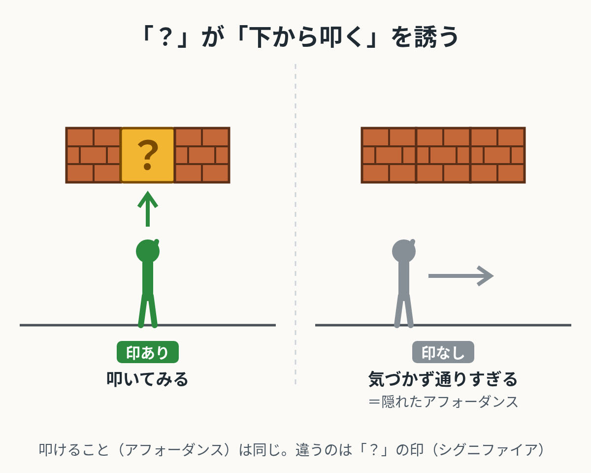
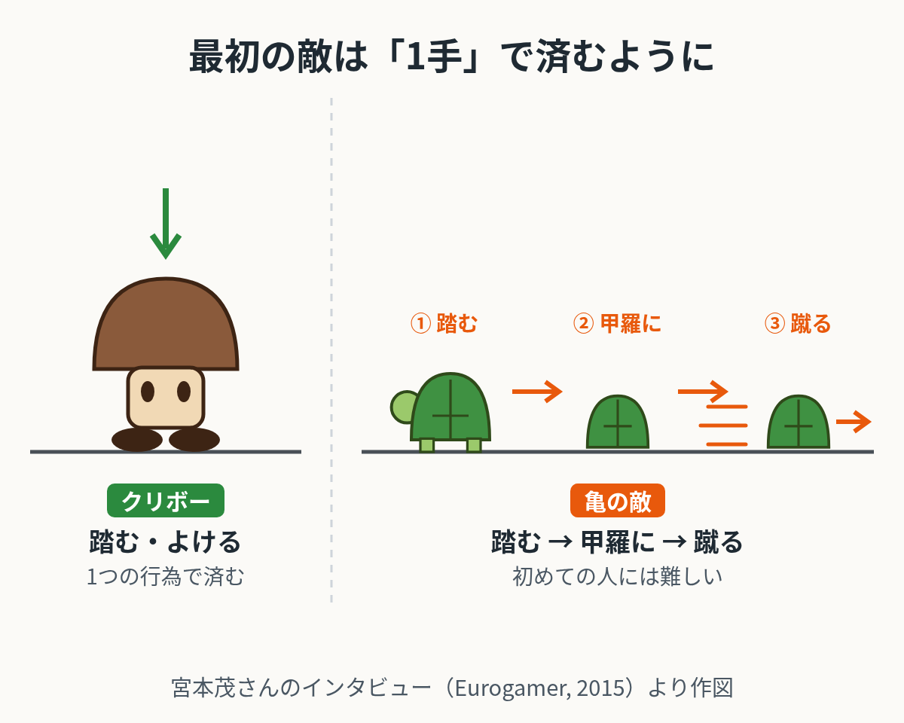

第7回 ゲーム
「？」ブロックと最初の敵（説明なしで遊び方を教える1-1）


何がどう行為を誘っているか
初代「スーパーマリオブラザーズ」の最初のステージ1-1には、操作説明の画面がありません。それでも多くの人が、遊びながら数秒でルールをつかみます。
宮本茂さんは2015年のインタビューで、こう話しています。歩いていけば、何か出てきたらよけるだろう。「？」がついているから叩くだろう。叩くとコインが出てうれしいので、次の「？」も叩く。するとキノコが出てきて、よけようとしても当たってしまい、マリオが大きくなる。1-1だけで、どんなゲームかが分かるようにした、というのです。
ノーマンの言葉でいえば、「？」は「ここを叩けます」と知らせるシグニファイアです。ブロックを下から叩けること自体（アフォーダンス）は、印があってもなくても変わりません。印があるから、その行為の可能性に気づけるのです。
惜しい例・悪い例との対比
宮本さんによると、最初の敵ははじめ亀の敵でした。でも、踏んで甲羅にして蹴るという手順は、初めての人にはいきなり難しい。そこで、踏むかよけるだけで済む敵として、キノコの「裏切り者」を作りました。これがクリボーです。最初に出会う相手を、1つの行為で済むものにしたわけです。
もし「？」がなく、まわりのレンガと同じ見た目だったら、叩けることは見つけにくくなります。行為の可能性はあるのに知覚されない「隠れたアフォーダンス」です。宮本さんは、試しに遊んでもらうときは自分では一切説明せず後ろで黙って見ていて、思ったとおりに遊んでくれないことが大抵だった、とも話しています。作り手の「わかるはず」は、見て確かめるまで当てになりません。
使いどころのひとこと
スライドやWebの最初の画面も、「1つの手がかり → 1つの行為 → すぐのごほうび」で組むと、説明なしで先へ進んでもらえます。宮本さんの「遊ぶ人は自分が何をしているか分かることがいちばん大事」という考えは、授業の導入や研究サイトのトップページを見直す物差しになります。ユーザーテストで口を出さずに見る、もそのまま使えます。